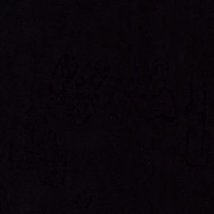

Pumps
-
Ara
12-20432-01 Black H-Wijdte€ 129,95
 -
Dr. Martens
Maybole Mary Jane Black Wanama€ 189,95
-
Bibi Lou
722Z12VK Negro€ 179,95
-
Unisa
Latino Black€ 129,95
Fashionable pumps voor dames: de perfecte schoenen voor een speciale gelegenheid
Pumps zijn een must-have voor iedere kledingkast voor dames. Ze zijn elegant, stijlvol en kunnen op elke gelegenheid gedragen worden. Of je nu naar een zakelijke afspraak gaat, een feestje of gewoon een casual afspraakje, met pumps zit je altijd goed.
Er zijn pumps in allerlei soorten en maten, dus er is voor elke vrouw wel een geschikte paar te vinden. Je kunt kiezen voor pumps met een hoge hak of een lage hak. Ook de kleuren en materialen zijn eindeloos. Van klassieke zwart leren pumps tot trendy metallic pumps, er is voor ieder wat wils.
Er zijn pumps in allerlei soorten en maten, dus er is voor elke vrouw wel een geschikte paar te vinden. Je kunt kiezen voor pumps met een hoge hak of een lage hak. Ook de kleuren en materialen zijn eindeloos. Van klassieke zwart leren pumps tot trendy metallic pumps, er is voor ieder wat wils.
Ben je op zoek naar de perfecte pumps voor jouw look? Bekijk dan nu onze collectie en vind jouw favoriet.